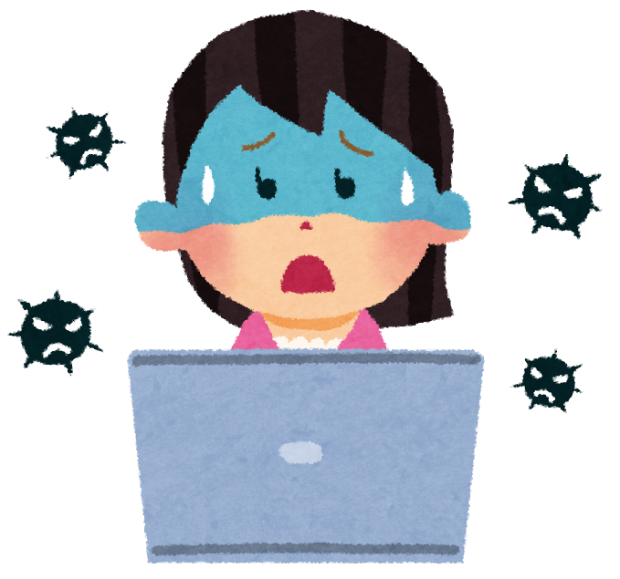

診断書
原因：コンピュータウイルス
身に覚えのないメールを開く、怪しいリンクをクリックする、見慣れないサイトや海外サイトにアクセスする、
USBメモリを使用した、怪しいアプリケーションをダウンロードした覚えはありますか。
もしかしたらそれによってダウンロードされた、ランサムウェアが実行された可能性があります。
ランサムウェアは悪意を持ってコンピュータに危害を加えるソフトウェアです。
予防・治療
電子メールは送信元が偽造されている可能性があるため、知人からのメールであっても送信元に確認して、不用意に添付ファイルを開いたりリンクをクリックすることは避けましょう。
また、自分の利用しているOSに更新がある場合には、アップデートをしておきましょう。
ウイルス対策ソフトの導入も必要です。また、パスワードも容易に特定できるものではないものに設定して、
認証手段もより強固にしていくことが必要です。
参考リンク
